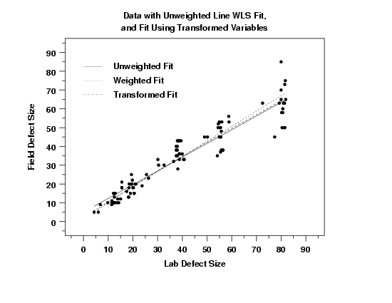

|
4.
Process Modeling
4.6. Case Studies in Process Modeling 4.6.2. Alaska Pipeline
|
|||
| Three Fits to Compare |
It is interesting to compare the results of the three
fits:
|
||
| Plot of Fits with Data |

This plot shows that, compared to the original fit, the transformed and weighted fits generate smaller predicted values for low values of lab defect size and larger predicted values for high values of lab defect size. The three fits match fairly closely for intermediate values of lab defect size. The transformed and weighted fit tend to agree for the low values of lab defect size. However, for large values of lab defect size, the weighted fit tends to generate higher values for the predicted values than does the transformed fit. |
||
| Conclusion | Although the original fit was not bad, it violated the assumption of homogeneous variances for the error term. Both the fit of the transformed data and the weighted fit successfully address this problem without violating the other regression assumptions. | ||

{kind=link}